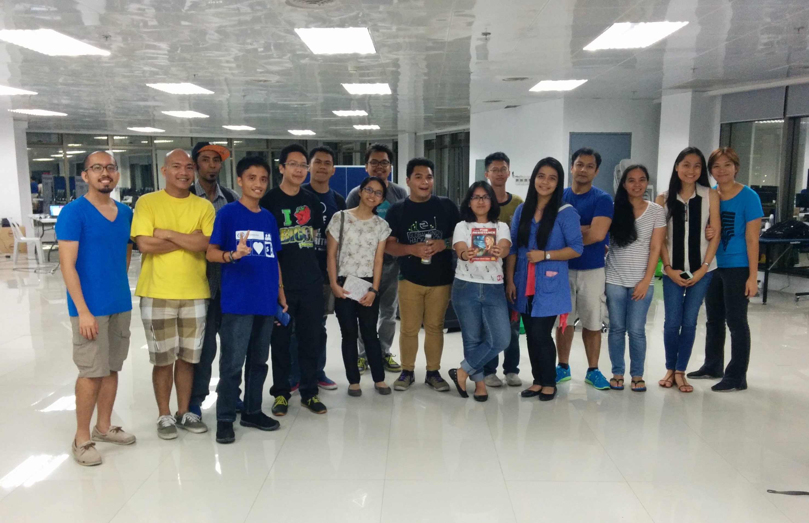
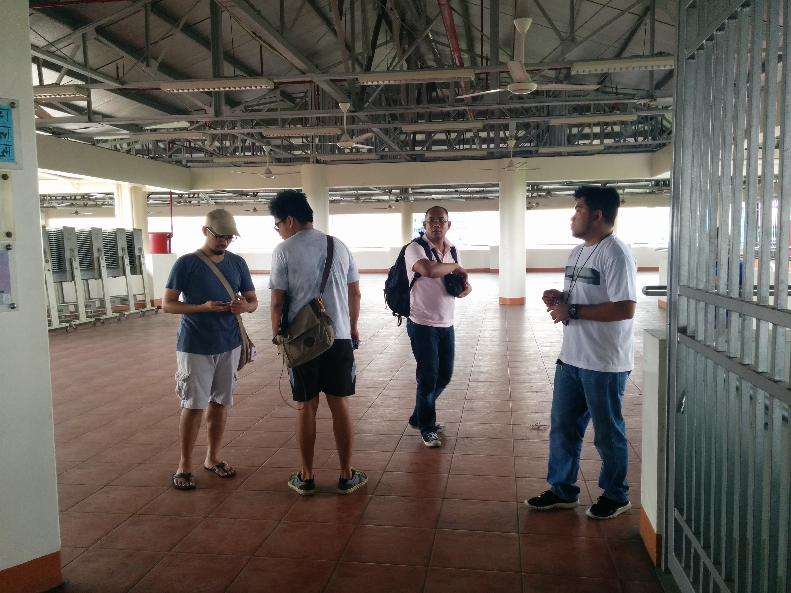

Volunteers¶
PyCon Philippines is run by volunteers. The previous PyCons would not have been successful without the help of these individuals. This year will not be different.

PyConPH 2014 Volunteers
{kind=link}
PyConPH 2015 Volunteers, June 27 Briefing

Ocular visit at Ateneo
{kind=link}
Ocular visit at Ateneo
The spirit of volunteerism is what makes the Python community and tech events like PyCon distinctly inspiring. Below are the list of people who stepped up to bring you PyCon Philippines 2015:
Conference Chair¶
Sony Valdez is the PyCon Philippines conference chair and the main person in charge. He’s responsible for setting the budget; monitoring expenses; and general oversight of all other committees. He works together with the Python.PH Board of Trustees to sort-out stuff behind the scenes. A self-professed gamer; he is also the mastermind of pun err... fun and board games in Python.PH. You can email him at president@python.ph.
Committee Chairs¶
- Design and Website Co-Chairs - Mark Steve Samson and Joy Lebrun
Steve and Joy are the people that oversee the design and printing of the PyCon Philippines logo, t-shirt, flyers, brochure, tarpauline, banner and conference IDs.
Steve is the web admin and maintainer of the PyCon Philippines website. If you’d like to help, submitting a pull request to the pycon-2015 repo with your changes will surely make him happy.
Steve has a knack for whipping fun stuff to talk about. You will always learn a thing or two from him. He claims that he’s not scary and is actually the most approachable geek among the group. You can reach him at admin@python.ph or via Twitter (@themarksteve).
Joy is responsible for the design of promotional materials for PyCon. You may reach her at vermarijoyguarneslebrun@gmail.com.
- Logistics Co-Chairs - Christine Balili, Kathleen Lara and Matt Lebrun
Christine, Kathleen and Matt are responsible for all the footwork and communication needed to get things in order for the venue, conference food and volunteer dinner.
You can reach them at chrisbalili99@gmail.com, kathleencastrolara@gmail.com and treasurer@python.ph (Matt) or via Twitter @tingbalili and @cr8ivecodesmith
- Stage-hand Chair - Josef Monje and Dian Leithon Isidro
Josef is responsible for the video coverage of the conference, extra projector, microphone, tables, laptop, etc. He and his team will be on standby in case something goes wrong on-stage and will see through the needs of the audience. He is also responsible for ensuring that our Code of Conduct is enforced throughout the conference. Reach out to him at josefmonje@gmail.com or via Twitter @josefmonje
- Fundraising Co-Chairs - Nadine Jamilla, Stef Sy and Micaela Reyes
If you have any sponsorship questions, please email nadinejamila@gmail.com, stef@stefsy.com, codemickeycode@gmail.com or say hi to them on Twitter (@nadinejamila, @stefsy and @codemickeycode)
They’re essentially the heroes of Python.PH this 2015. They put countless of hours and effort in making sure we can deliver the conference to the widest audience possible by driving down the ticket costs for PyCon with the help of sponsors.
- Marketing and Community Relations Chairs - Randall Sayat, Grace Coroza and Beato Bongco
Randall, Grace and Beato are responsible for advertising PyCon 2015; social media exposure (facebook, twitter, etc); writing a report on PyCon 2015; gathering feedback (during pycon and after pycon); email marketing and announcements; informing participants about the Code of Conduct to the event; Filipino hospitality for our foreign speakers; securing accomodation for foreign speakers/guests; meeting foreign speakers/guests at the airport; escort of foreign speakers/guests to their hotel and immigration letters for foreign guests.
You may reach them at randallsayat@gmail.com, grace.coroza@gmail.com, beatobongco@gmail.com.
- Program Committee Chairs - Sony Valdez and Rodolfo Duldulao
Sony and Dulds are the people behind the theme and our awesome program for PyConPH 2015. They are the ones who make sure that the quality talks and workshops we bring this PyCon will be a blast.
You may reach Dulds at rnduldulaojr@gmail.com
Committee Members¶
The following individuals volunteered at least eight hours of their time during the conference and are part of the following committees:
Logistics Committee¶
- Jadurani Davalos
- Alysson Alvaran
- Nikko Magalona
- John Paul Llenaresas
Stage-hand Committee¶
- Clarke Benedict Plumo
- First Val Babon
- Jonathan Doydora
- Patrick Ofilada
- Rommel Philip Afurong
- Wilson Censon
- Mark & Carlo
Emcees¶
- Alysson Alvaran
- Beato Bongco
- Randall Sayat